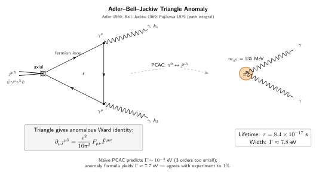

反常 (anomaly) — 经典对称怎么在量子层面破缺?
上一节讲跑动耦合, 一个在经典尺度不变的自由理论, 量子化后得到一个依赖能标 $\mu$ 的 $\alpha_s(\mu)$; 经典尺度对称在量子层面破了. 这一节要讲一个更干净、更戏剧性的例子: 经典层面写得一清二楚的守恒流, 量子化后不再守恒. 这个现象不是误差累积, 不是技术瑕疵, 也不是正则化选得差 — 换哪种一致的正则化都会得到同一个反常系数. 它是量子化过程本身必须付出的代价, 一旦接受路径积分的测度 $\mathcal D\psi\,\mathcal D\bar\psi$ 的定义, 某些经典对称就注定要破.
"反常"一词在这里是严格的术语: 它专指一类 经典有对称, 量子无对称 的情形, 而且这一"无"不是像自发破缺那样靠真空态, 也不是像显式破缺那样靠加个小质量 — 它是路径积分的定义里 无法避免 的. 换哪种符合基本公理 (幺正性、因果性、洛伦兹协变) 的量子化方案, 反常系数都锁死在同一个数 $e^2/(16\pi^2)$. 这一点让反常不仅是数学上的好奇现象, 更是物理上的硬约束: 任何一个有希望的规范理论都必须让"规范反常"精确抵消, 否则理论就不自洽. 本节分四节, 先用一个观测现象 ($\pi^0 \to \gamma\gamma$) 把问题逼到墙角, 然后沿 Fujikawa 的路径积分推法, 把轴向反常完整推一遍 — 这正是本节的 cliché deepdive — 再回到三角图和反常消除, 最后落到数字和历史上.
一、一个不该发生的衰变: $\pi^0 \to \gamma\gamma$
把问题摆出来. 中性 $\pi$ 介子 $\pi^0$ 是最轻的强子之一, 质量 $m_{\pi^0} = 134.98\,$MeV, 平均寿命 $\tau = (8.43 \pm 0.13) \times 10^{-17}\,$s. 它主导的衰变模式是 $\pi^0 \to \gamma\gamma$, 分支比 $\approx 98.8\%$. 换算成衰变宽度: $\Gamma = \hbar/\tau \approx 7.81\,$eV. 这是一个相当小的宽度 (作对比, $\rho$ 介子的宽度是 149 MeV, 差 $10^7$), 但对应的寿命还是 $10^{-17}$ 秒的量级 — 比典型的电磁衰变 (例如原子的 $10^{-8}$ 秒) 短得多.
为什么 $\pi^0 \to \gamma\gamma$ 有意思? 在手征对称的理论框架 (PCAC, Partially Conserved Axial Current) 里, $\pi^0$ 被看作是手征 SU(2) 自发破缺的戈德斯通玻色子 (严格地说, 是近 Goldstone 玻色子, 因为夸克有小质量). 若轴向流严格守恒, $\pi^0$ 会是无质量戈德斯通, 衰变到两个光子的振幅由守恒律的软定理 (soft theorem) 直接给出 — 具体说来, 在 $\pi^0$ 动量趋于零的极限下, 振幅应该正比于 $q^\mu\, M_\mu(\gamma\gamma)$, 其中 $q$ 是 $\pi^0$ 的动量. 若 $j^{\mu 5}$ 守恒, 这个振幅会被压制 (即所谓 Adler zero). PCAC 把小的夸克质量当作手征对称的显式破缺源, 给出一个极小的预言:
$$ \Gamma(\pi^0 \to \gamma\gamma) \xrightarrow{\text{朴素 PCAC}} \mathcal O(m_\pi^2/F_\pi^2)\cdot \text{tiny} \approx 10^{-3}\,\text{eV}, $$
和实验的 7.81 eV 差了三个数量级. 这个矛盾在 1960 年代末是个令人头疼的问题. 实验家显然把衰变率测得很准, 那么要么 PCAC 错了, 要么守恒律本身有问题.
1969 年, Adler, 以及 Bell 和 Jackiw 独立发现, 守恒律本身有问题. 轴向流 $j^{\mu 5} = \bar\psi\gamma^\mu\gamma^5\psi$ 在经典 QED 里确实是守恒的 (若夸克质量为零), 但在量子层面守恒律接受一个修正项 — 即"反常":
$$ \partial_\mu j^{\mu 5} = 2 i m\,\bar\psi\gamma^5\psi + \frac{e^2}{16\pi^2}F_{\mu\nu}\tilde F^{\mu\nu}. \tag{1} $$
这里 $\tilde F^{\mu\nu} = \tfrac12\epsilon^{\mu\nu\rho\sigma}F_{\rho\sigma}$ 是 $F$ 的对偶, $F\tilde F = 4\,\vec E\cdot\vec B$ (电磁场里是"磁电各向同性"因子). 第一项 $2im\bar\psi\gamma^5\psi$ 是经典上就在那的显式破缺 (夸克质量带来); 第二项 $e^2 F\tilde F/(16\pi^2)$ 是纯量子修正, 在经典层面完全没有. 把这条修正后的守恒律代入 $\pi^0$ 衰变的计算, $\pi^0$ 作为轴向流的赝标源, 振幅变成
$$ \mathcal M(\pi^0 \to \gamma\gamma) = \frac{\alpha N_c}{\pi F_\pi}\,\epsilon^{\mu\nu\rho\sigma}\epsilon_\mu^{(1)*}k_\nu^{(1)}\epsilon_\rho^{(2)*}k_\sigma^{(2)}, $$
其中 $N_c = 3$ 是夸克颜色数, $F_\pi \approx 92.4\,$MeV 是 $\pi$ 衰变常数. 算出衰变宽度
$$ \Gamma(\pi^0 \to \gamma\gamma) = \frac{\alpha^2 N_c^2 m_\pi^3}{64\pi^3 F_\pi^2} \approx 7.73\,\text{eV}, $$
和实验 $7.81 \pm 0.12\,$eV 只差 1%. 这是反常项的第一个硬证据 — 如果没有它, 理论值低 3 个数量级; 有它, 精确到百分之一. 顺带一提, 这个公式里 $N_c^2 = 9$ 的因子在 1960 年代末还是颜色数的间接实验证据之一: 如果 $N_c = 1$ (没有颜色), 预言值会差 9 倍, 和实验对不上. 换句话说, 1969 年的轴向反常 + $\pi^0$ 寿命测量, 已经在不知不觉中测到了"夸克有三种颜色".
二、Deepdive: 路径积分测度的 Jacobian (Fujikawa 方法)
这是本节要严格推的 cliché. 教科书经常说"反常来自路径积分测度", 又常常一笔带过. 我们跟着 Fujikawa 1979 年的做法, 把这话的每个字兑现.
第一步: 经典层面的推导. 考虑一个无质量 Dirac 场耦合到外电磁场, 经典作用量
$$ S[\bar\psi,\psi,A] = \int d^4x\,\bar\psi\,i\gamma^\mu D_\mu\psi, \qquad D_\mu = \partial_\mu - i e A_\mu. $$
考虑轴向变换 $\psi \to e^{i\alpha(x)\gamma^5}\psi$, $\bar\psi \to \bar\psi\,e^{i\alpha(x)\gamma^5}$ ($\bar\psi$ 不取共轭是因为 $\gamma^5$ 和 $\gamma^0$ 反对易). 当 $m = 0$, 作用量变化为
$$ \delta S = -\int d^4x\,\alpha(x)\,\partial_\mu j^{\mu 5}(x), \qquad j^{\mu 5} = \bar\psi\gamma^\mu\gamma^5\psi. $$
经典上, 场方程给 $\partial_\mu j^{\mu 5} = 0$. 这是经典手征对称的 Noether 流.
第二步: 量子化 — 路径积分测度变了. 量子化后, 我们写下生成泛函
$$ Z[A] = \int \mathcal D\bar\psi\,\mathcal D\psi\,e^{iS[\bar\psi,\psi,A]}. $$
要问: 在轴向变换 $\psi \to e^{i\alpha\gamma^5}\psi$ 下, 这个积分表达式是否不变? 作用量 $S$ 的变化我们已经算过, 剩下关键: 测度 $\mathcal D\bar\psi\,\mathcal D\psi$ 变不变?
Fujikawa 的观察是: 不变是一个习惯上的假设, 不是一个证明. 正确的做法是把 $\psi$ 按 Dirac 算符的本征模式展开, 明写测度, 然后查变换下的 Jacobian.
具体地, 在欧氏时空里 $i\slashed D \equiv i\gamma^\mu D_\mu$ 是厄米算符, 有完备本征函数系 $\{\phi_n(x)\}$, 本征值 $\lambda_n$. 把场展开 $\psi(x) = \sum_n a_n\phi_n(x)$, $\bar\psi(x) = \sum_n \bar b_n\phi_n^\dagger(x)$, 其中 $a_n, \bar b_n$ 是 Grassmann 数. 测度定义为
$$ \mathcal D\bar\psi\,\mathcal D\psi = \prod_n d\bar b_n\,da_n. $$
在轴向变换 $\psi \to e^{i\alpha(x)\gamma^5}\psi = \sum_n a_n'\phi_n(x)$ 下, 新系数是
$$ a_n' = \sum_m C_{nm} a_m, \qquad C_{nm} = \int d^4x\,\phi_n^\dagger(x)\,e^{i\alpha(x)\gamma^5}\phi_m(x). $$
对 Grassmann 积分, 变量变换的 Jacobian 是 $\det(C^{-1})$ (Grassmann 积分和普通变量的 Jacobian 取相反的幂), 所以
$$ \prod_n da_n = [\det C]^{-1}\prod_n da_n', \qquad \prod_n d\bar b_n = [\det C]^{-1}\prod_n d\bar b_n'. $$
两个一起, 测度总共多一个 $[\det C]^{-2}$ 因子. 对无穷小 $\alpha$, $C = \mathbb I + i\alpha\gamma^5 + \mathcal O(\alpha^2)$, $\det C \approx \exp[i\,\mathrm{Tr}(\alpha\gamma^5)]$ (用 $\det = \exp\mathrm{tr}\ln$), 所以
$$ \mathcal D\bar\psi'\,\mathcal D\psi' = \exp\big[-2i\,\mathrm{Tr}(\alpha\gamma^5)\big]\cdot\mathcal D\bar\psi\,\mathcal D\psi. $$
这里 $\mathrm{Tr}$ 是 函数空间 + 狄拉克指标 的双重迹, $\mathrm{Tr}(\alpha\gamma^5) = \sum_n \int d^4x\,\alpha(x)\,\phi_n^\dagger(x)\gamma^5\phi_n(x)$.
第三步: 这个迹形式上等于零 — 但不能这样算. 粗看 $\mathrm{tr}\,\gamma^5 = 0$ (对任何有限维 Dirac 指标), 于是似乎 $\mathrm{Tr}(\alpha\gamma^5) = 0$, 测度不变, 反常不存在. 这是历史上 (1950s) 多数人相信的结论 —— 错了. 错在哪? 因为我们这里是 无穷维 函数空间的迹, 不能把函数指标求和与 Dirac 指标的迹随意交换. 准确地说, $\sum_n \phi_n^\dagger\gamma^5\phi_n$ 是发散的, 必须正则化.
Fujikawa 的关键步骤是用 heat kernel regulator 截断求和:
$$ \mathrm{Tr}(\alpha\gamma^5) = \lim_{M\to\infty}\sum_n \int d^4x\,\alpha\,\phi_n^\dagger\gamma^5 e^{-\lambda_n^2/M^2}\phi_n. $$
即按 $|\lambda_n| \gt M$ 的高频模式指数压低. 这相当于换能量切断 $M$, 最后让 $M\to\infty$. 把指数写回算符形式, $\sum_n e^{-\lambda_n^2/M^2}\phi_n\phi_n^\dagger \to e^{-(i\slashed D)^2/M^2}$ 的核, 于是
$$ \mathrm{Tr}(\alpha\gamma^5) = \lim_{M\to\infty}\int d^4x\,\alpha(x)\,\mathrm{tr}\big[\gamma^5\,e^{-(i\slashed D)^2/M^2}\big]_{\rm Dirac+位置对角}. $$
算 $(i\slashed D)^2 = -D^2 + \tfrac{ie}{2}\sigma_{\mu\nu}F^{\mu\nu}$, 其中 $\sigma_{\mu\nu} = \tfrac{i}{2}[\gamma_\mu,\gamma_\nu]$. 在平面波基 $e^{ik\cdot x}$ 下把指数展开:
$$ e^{-(i\slashed D)^2/M^2} \to \int\!\frac{d^4k}{(2\pi)^4}e^{-k^2/M^2}\Big[1 - \frac{ie\sigma_{\mu\nu}F^{\mu\nu}}{2M^2} + \frac{1}{2}\Big(\frac{ie\sigma F}{2M^2}\Big)^2 + \cdots\Big]. $$
每一项前面和 $\gamma^5$ 求迹. 关键是两个 Dirac 迹恒等式:
- $\mathrm{tr}[\gamma^5] = 0$ — 第一项零.
- $\mathrm{tr}[\gamma^5\sigma_{\mu\nu}] = 0$ — 第二项零.
- $\mathrm{tr}[\gamma^5\sigma_{\mu\nu}\sigma_{\rho\sigma}] = -4i\,\epsilon_{\mu\nu\rho\sigma}$ — 这一项不为零!
- 更高项 $\sim (\sigma F)^3/M^6$ 等, 在 $k$ 积分里被 $k^0 e^{-k^2/M^2}$ 的低次幂乘以 $1/M^{2n}$, $n \ge 3$, $M\to\infty$ 时消失.
所以能活下来的只有 $(\sigma F)^2/M^4$ 那一项. 拼起来:
$$ \mathrm{Tr}(\alpha\gamma^5) = \lim_{M\to\infty}\int\!d^4x\,\alpha\,\frac{1}{2}\Big(\frac{ie}{2M^2}\Big)^2(-4i)\epsilon_{\mu\nu\rho\sigma}F^{\mu\nu}F^{\rho\sigma}\int\!\frac{d^4k}{(2\pi)^4}\,e^{-k^2/M^2}. $$
欧氏的 $k$ 积分 $\int d^4k\,e^{-k^2/M^2}/(2\pi)^4 = M^4/(16\pi^2)$. 代入, $M^4$ 因子 恰好 抵消掉 $1/M^4$, 留下一个有限的非零结果:
$$ \mathrm{Tr}(\alpha\gamma^5) = \int d^4x\,\alpha(x)\,\frac{e^2}{32\pi^2}\epsilon_{\mu\nu\rho\sigma}F^{\mu\nu}F^{\rho\sigma} = \int d^4x\,\alpha(x)\,\frac{e^2}{16\pi^2}F_{\mu\nu}\tilde F^{\mu\nu}. $$
测度因此得到
$$ \mathcal D\bar\psi'\,\mathcal D\psi' = \exp\Big[-\int d^4x\,\alpha(x)\,\frac{ie^2}{8\pi^2}F\tilde F\Big]\cdot\mathcal D\bar\psi\,\mathcal D\psi, $$
等价于 (把 $-2i\,\mathrm{Tr}$ 的因子 2 计入) 一个经典作用量的隐性附加. 把这一项加到 $\delta S$ 里, 生成泛函在轴向变换下要求
$$ \partial_\mu j^{\mu 5} = \frac{e^2}{16\pi^2}F_{\mu\nu}\tilde F^{\mu\nu}. \tag{2} $$
这就是方程 (1) 的纯路径积分推导 (无质量情形). 值得留意的是, 最终结果对正则化方法的具体选择 无关 — 换 Pauli-Villars, dimensional regularization (有 $\gamma^5$ 定义的微妙), 或晶格, 只要一致地保持规范不变, 都给出同样的 $e^2/(16\pi^2)$. 这是反常"几何性质"的体现: 它不是正则化的人为产物, 而是 Dirac 算符谱本身的拓扑不变量 (Atiyah-Singer 指标定理的 4 维版本).

三、三角图视角与反常消除
上一节用测度 Jacobian 推反常. 历史上 Adler 和 Bell-Jackiw 是从另一条路走的: 直接算三角 Feynman 图. 两条路给同一个结果, 但三角图视角在概念上更直观, 也直接连到"反常消除"这个深刻的标准模型约束.
考虑如下振幅: 一个轴向流源 $j^{\mu 5}$ 产生一对光子 $\gamma\gamma$, 通过一个费米子三角圈. Feynman 规则写出
$$ \Gamma^{\mu\nu\rho}(k_1, k_2) = (-1)\int\!\frac{d^4\ell}{(2\pi)^4}\,\mathrm{tr}\Big[\gamma^\mu\gamma^5\,\frac{i}{\slashed\ell}\,(ie\gamma^\nu)\,\frac{i}{\slashed\ell-\slashed k_1}\,(ie\gamma^\rho)\,\frac{i}{\slashed\ell-\slashed k_1-\slashed k_2}\Big] + (k_1,\nu \leftrightarrow k_2,\rho). $$
加上交叉图保证对称, $(-1)$ 是费米子圈的符号. 在四维上, 这个积分是线性发散的 ($\int d^4\ell\,\ell^{-3}$ 看上去). 要让积分有意义, 必须选一个正则化. 关键的物理事实: 任何一致的正则化都不能同时保持两件事:
- 轴向流守恒: $k^\mu_{j^5}\,\Gamma_{\mu\nu\rho} = 0$ (轴向 Ward 恒等式).
- 矢量流守恒 (即电磁规范不变): $k_1^\nu\,\Gamma_{\mu\nu\rho} = 0 = k_2^\rho\,\Gamma_{\mu\nu\rho}$.
三件对称中, 你必须放弃一件. 物理上, 电磁规范不变 (矢量流守恒) 是 必须 保的 — 否则光子质量、截面理论都会崩. 于是我们牺牲轴向 Ward, 得到
$$ k^\mu_{j^5}\,\Gamma_{\mu\nu\rho}(k_1, k_2) = \frac{e^2}{4\pi^2}\epsilon_{\nu\rho\alpha\beta}k_1^\alpha k_2^\beta, $$
傅里叶回位置空间, 即 $\partial_\mu j^{\mu 5} = (e^2/16\pi^2) F\tilde F$. 系数和 Fujikawa 算出的完全一致.
反常消除. 现在把 $j^{\mu 5}$ 换成任意的定域规范流. 如果轴向部分是被规范的 — 例如电弱里 $SU(2)_L$ 只和左手费米子耦合, 其"轴向流"的一部分被规范成 $W$ 玻色子的流 — 那么反常就会破坏 规范对称. 规范对称一破, 理论不可重整, 不自洽. 于是一个硬约束出现: 所有"规范反常"在费米子种类上求和后必须为零. 这就是"反常消除".
具体到标准模型 $SU(3)_c \times SU(2)_L \times U(1)_Y$, 危险的反常是 $SU(2)_L^2\times U(1)_Y$ 和 $U(1)_Y^3$. 两类反常的系数正比于一代费米子的超荷之和与荷之立方和. 对一代轻子 + 夸克 (夸克有 3 色):
$$ \sum_{\text{1 generation}} Y_L = \underbrace{3\times 2\times(+\tfrac{1}{6})}_{\text{左手夸克双重态}} + \underbrace{2\times(-\tfrac12)}_{\text{左手轻子双重态}} = 1 - 1 = 0. $$
这正是"一代里夸克超荷 $+1/6$ 和轻子超荷 $-1/2$ 恰好以 $3\times 2\times 1/6 = 1$ 对 $2\times 1/2 = 1$ 抵消"的数值. $U(1)_Y^3$ 反常的消除是更精细的计算, 每代的贡献也相加为零. 这不是偶然, 而是标准模型内部的一致性硬约束. 换种说法: "夸克有三种颜色"、"夸克电荷是 $\pm 2/3, \mp 1/3$ 而不是随便什么值"、"每代带一个中微子" — 这几条看似独立的事实, 都被反常消除条件绑在一起. 如果你试图把夸克电荷改成 $+0.5, -0.5$, 或者不加中微子, 反常不会抵消, 规范理论就不再可重整.
这一点在 1970 年代末 Bouchiat-Iliopoulos-Meyer 以及 Gross-Jackiw 那里就被点明. 今天它是一条非常实用的约束: 在任何 BSM (beyond SM) 模型里加新费米子, 都要检查新费米子的量子数是否让反常消除成立. 举例, 大统一理论 (GUT) 里, $SU(5)$ 的 $\mathbf{\bar 5}\oplus\mathbf{10}$ 表示之所以"正好装下一代费米子", 一部分原因就是这个表示组合的反常自动为零.
四、数字、极限、历史
数字 1: $\pi^0$ 寿命的精确数字对比. 反常公式给
$$ \Gamma^{\rm th}(\pi^0\to\gamma\gamma) = \frac{\alpha^2 m_\pi^3 N_c^2}{64\pi^3 F_\pi^2}, $$
代入 $\alpha = 1/137.036$, $m_\pi = 134.98\,$MeV, $N_c = 3$, $F_\pi = 92.4\,$MeV: 先算 $\alpha^2 N_c^2 = (1/137)^2\cdot 9 \approx 4.8\times 10^{-4}$; $m_\pi^3 \approx 2.46\times 10^6\,$MeV$^3$; $F_\pi^2 \approx 8540\,$MeV$^2$; 合起来 $m_\pi^3/F_\pi^2 \approx 288\,$MeV. 分母 $64\pi^3 \approx 1984$. 于是
$$ \Gamma^{\rm th} \approx \frac{4.8\times 10^{-4}\times 288\,\text{MeV}}{1984} \approx 6.97\times 10^{-5}\,\text{MeV} = 7.0\,\text{eV}. $$
加入手征微扰修正 (次阶 $m_u$-$m_d$ 混合, 电磁修正) 会把理论值微调到 $\approx 8.1\,$eV, 和实验 $7.81\pm 0.12\,$eV 在 $\sim 4\%$ 内一致. 这是基础物理里最精确的反常验证之一. 没有反常项, 这个衰变率按 PCAC 朴素预言会是 $\sim 10^{-3}\,$eV 量级, 差四个数量级.
数字 2: 不同反常的数量级对比. 除 QED 的轴向反常外, QCD 里也有一个类似的反常 (gluonic $F\tilde F$): $\partial_\mu j^{\mu 5}_{\rm QCD} = (g_s^2/16\pi^2)\mathrm{tr}\,G\tilde G$. 这一项给出 $\eta'$ 介子比 $\pi^0$ 重得多 ($m_{\eta'} = 958\,$MeV vs. $m_{\pi^0} = 135\,$MeV) 的解释 — 'tHooft 1976 指出, 若只看 QCD 的味 $U(1)_A$, 它的 Goldstone 玻色子 $\eta'$ 应接近 $m_\pi$ 的量级; 实际 $\eta'$ 质量 $958\,$MeV, 额外的 $\sim 800$ MeV 正来自 QCD 反常 + 瞬子贡献. 粗略地 $m_{\eta'}^2 - m_{\eta}^2 \sim (2N_f/F_\pi^2)\chi_{\rm top}$, 其中 $\chi_{\rm top} \sim (180\,\text{MeV})^4$ 是拓扑电荷率, 从格点 QCD 得. 这就是所谓"$U(1)_A$ 问题"的解决.
极限检验: 反常消除作为约束. 考虑一个假想的"半个标准模型", 每代只有轻子而没有夸克. $U(1)_Y^3$ 反常来自轻子: 左手双重态 ($Y = -1/2$, 2 个) + 右手单态 ($Y = -1$, 1 个). 算 $\sum_L Y_L^3 - \sum_R Y_R^3 = 2(-1/2)^3 - (-1)^3 = -1/4 + 1 = 3/4 \ne 0$. 不抵消, 这个假想理论不自洽. 加上夸克 (左手双重态 $Y = 1/6$, 3 色共 6; 右手上夸克 $Y = 2/3$, 3 色; 右手下夸克 $Y = -1/3$, 3 色): $\sum_L = 6(1/6)^3 = 1/36$, $\sum_R = 3(2/3)^3 + 3(-1/3)^3 = 3(8/27) - 3(1/27) = 24/27 - 3/27 = 21/27 = 7/9$. 轻子 + 夸克总 $\sum_L Y^3 - \sum_R Y^3 = (-1/4 + 1/36) - (-1 + 7/9) = -2/9 - (-2/9) = 0$. 精确抵消. 这个代数验算的意义是: 夸克和轻子不能互相独立, 它们的量子数被反常消除一条一条绑死. 这是粒子物理里最深刻的"量子一致性" — 一个电子的电荷为什么是 $-e$, 一个上夸克的电荷为什么是 $+2/3\,e$, 而不是随便什么数, 有一部分答案在这里.
历史. 1954 年 Steinberger 已经注意到 $\pi^0$ 衰变率在朴素 PCAC 下偏小, 但没有给出解释. 1961 年 Nambu 的手征对称理论预言 $\pi^0$ 应是近 Goldstone, 加深矛盾. 1963 年 Veltman 和 Sutherland 各自证明"Sutherland-Veltman 定理": 若轴向流严格守恒, 在 $m_\pi\to 0$ 极限下 $\pi^0\to\gamma\gamma$ 振幅必为零. 这把实验观测 (非零寿命) 和理论 (守恒) 的矛盾固定在那里, 但没有突破. 突破来自 1969 年两个独立工作:
- Adler (Phys. Rev. 177, 2426, 1969): 直接算三角图, 发现轴向 Ward 恒等式加了一个反常项.
- Bell 和 Jackiw (Nuovo Cimento A 60, 47, 1969): 从 sigma 模型的对称分析得到同一结论.
"ABJ 反常"由此得名. 随后十年里, 反常消除作为约束被 Bouchiat-Iliopoulos-Meyer (1972) 应用到电弱模型, 证明每代的夸克+轻子恰好抵消所有规范反常; 这是 GWS 电弱理论能够自洽的关键一步. 1976 年 't Hooft 把 QCD 反常和瞬子联系起来, 给出 $\eta'$ 质量的解释. 1979 年 Fujikawa (Phys. Rev. Lett. 42, 1195) 给出路径积分测度推导, 就是我们第二节推的那一套. 1984 年 Wess-Zumino 把反常推广到非阿贝尔, 导出 Wess-Zumino-Witten 项 (和弦理论深度相关). 到 1980 年代末, Green-Schwarz 反常消除在超弦里把维度锁到 10 — 这些都是 ABJ 1969 的远房后代.
小结
反常这一节告诉我们两件事. 一, 量子化不是一个无代价的抽象操作: 经典层面一条漂亮的守恒律, 在路径积分测度的层面可能被无可救药地破掉, 这个破损量本身 ($e^2/16\pi^2\cdot F\tilde F$) 是几何的, 不依赖正则化选择; Fujikawa 的 heat kernel 推导把这一几何性赤裸地呈现出来 — 迹 $\mathrm{Tr}\,\gamma^5$ 形式为零, 但函数空间无穷维的正则化把它抖出一个 $F\tilde F$. 二, 反常不只是数学好奇, 它是一条锋利的物理约束: 所有规范反常必须在物质谱里抵消, 这一条就把标准模型每代夸克与轻子的电荷、颜色数、手征性几乎全部锁死. 下一节 Wick 转动会让我们把欧氏路径积分写成严格良定义的概率测度, 给本节的正则化推导提供更坚实的分析基础. 往后的话, 反常会出现在拓扑性质 (Atiyah-Singer 指标定理, 瞬子计数)、手征反常贡献的磁单极、超弦的 Green-Schwarz 机制、规范-引力反常与黑洞热力学、凝聚态拓扑态 (Weyl 半金属里的 chiral magnetic effect) — 这些都是 1969 年 Adler 和 Bell-Jackiw 那个不起眼的三角图的远影.
▲